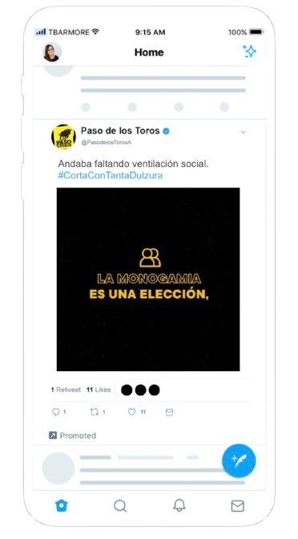
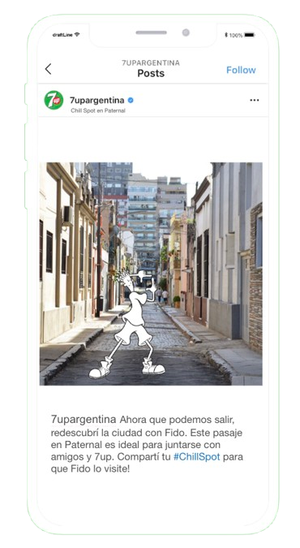

2017
Reparación Total is Elvive's top-selling product. L'Oréal usually relies on global content, but for this launch, the biggest of the year, we used our local ambassador to connect with Argentine culture. I worked across pre-production, on-set coordination, and the post-launch e-commerce ripple.
 YouTube ↗
YouTube ↗
Brief / Constraint
A global Elvive platform that needs its own cut, talent moment, and sell-in by market. Translate the global codes into something Argentine without compromising brand consistency.
What I did
Worked with our agency partners McCann and Publicis on the production. Beyond the film, we built influencer activations and a launch event with 200+ guests, plus the post-launch e-commerce rollout.
What I took with me
The single most useful lesson: the difference between a beautiful spot and a commercially useful one is the activation calendar that follows it.
2018
Óleo Extraordinario was Elvive's highest-margin product. When YouTube Shorts and Reels first launched, we had global content built for traditional 30s formats and had to make it feel native to vertical short-form, then translate that into e-commerce.
 YouTube ↗
YouTube ↗
Brief / Constraint
Get an established hero product into formats that worked muted, vertical, and scroll-driven, without losing the codes the franchise had spent years building.
What I did
Worked on the social-first creative rollout, coordinating with the brand team and digital partners to produce vertical-native content that retained L'Oréal's premium codes but earned attention in the first second. Then mirrored the same content across e-commerce surfaces.
2019 / 2020
Argentina is a huge country with very different traditions, culture, and income levels by region, but everything in the beer business gets concentrated in Buenos Aires, where the biggest artists are. We opened 6 regional marketing teams, reallocating budget by each brand's local market share, so they could activate locally instead of competing for the same Buenos Aires events.
Brief / Constraint
Within six months, lift the market share of our value-tier brands. Quilmes and Brahma are the company's cash cows, and they had been losing share for five years against CCU. The bet was that locally-rooted activations would do what national campaigns couldn't.
What I did
Designed the entire project, pitched it, hired the team, and managed the activations and the connection between regional execution and central marketing. Seven brands running ad-hoc regional activations in parallel.
2020
In 2020, sharing a bottle, a normal social ritual, was suddenly a vector. Brahma's response: stickers on the label, so each person could mark their own bottle. A small product gesture, scaled into a national campaign.
 YouTube ↗
YouTube ↗
Brief / Constraint
How does a beer brand show up in a pandemic without being either tone-deaf or sanctimonious? The category was paralyzed; nobody had figured out the tone yet.
What I did
Project-managed the campaign across the creative team at draftLine and the brand team at Brahma: briefing, production, delivery. The product gesture was simple, but the alignment between marketing, packaging, and ops to ship stickers nationally was where most of the work lived.
2020
The Argentine market was beaten down. People couldn't afford to pay more, so we made the beer smaller. Coronita, a smaller-format bottle that lowered out-of-pocket cost without lowering the brand. Since we couldn't shoot the new product (no production crews on set), we built the entire launch in illustration.
Brief / Constraint
Launch a new SKU into a market in lockdown. No production crews allowed on set, no live talent, and a category that all looks the same on shelf. Two constraints stacked on top of a launch.
What I did
Led the creative team end-to-end (briefing, production coordination, delivery) and pivoted to a fully illustrated visual system, turning the constraint into the brand's entry point.
This is the cleanest example of the mindset I want on every team I'm in: when the constraint is real, stop trying to solve around it, solve through it.
2020
How do you keep an outdoor-celebration brand alive when the country won't let you leave home? We turned it from a brand problem into a cause: helping the people in the tourism industry who were worse off than us.
 YouTube ↗
YouTube ↗
Brief / Constraint
Tourism, Corona's natural cultural territory, was on the floor. The brand had to participate, but participation in 2020 meant something different than a glossy beach spot. The work had to be useful, not decorative.
What I did
Coordinated with the partner hotels on the brief, the deal terms, and the redemption mechanic (six-pack with QR code, raffle for one of 100 four-person, three-night packages). Then built the production structure and managed the crews who filmed across 8 regions of the country: Patagonia, Atlantic Coast, NOA, NEA, Litoral, Córdoba, and Cuyo.
Purpose isn't a tagline; it’s a commitment. When a brand’s core identity is ‘The Outdoors,’ and the world is forced to stay inside, authenticity is proven by how you show up for the industry that makes your brand possible. We turned a marketing challenge into a cause that connected our values with the survival of local tourism
2021
Corona Sunsets is Corona's flagship music-and-sunset event franchise. I led the first edition back after the pandemic, end-to-end.
 YouTube ↗
YouTube ↗
Brief / Constraint
Re-introduce the brand's biggest experiential platform in a country emerging from lockdown, for a brand whose territory is "outdoors." Get the format right on the first try, the audience would tell us immediately if it felt forced.
What I did
Owned the event end-to-end. Guest list curation (who got invited and why), the registration and sign-up mechanic, the entry experience and arrival flow, the F&B pour design, the brand visual integration across the venue (stages, signage, photo moments), and the communications calendar that built anticipation in the weeks before.
Why it mattered
this project was a test in operational precision. It allowed me to design the end to end guest experience,from the first digital invite to the physical arrival flow ensuring that every touchpoint felt safe, seamless, and authentically Corona
2021
Budweiser had been damaged in Argentina under the previous distributor. The brief was to rebuild it as a premium brand. New format launches were part of that repositioning, leaning on the global communications that already had real strength behind them.
 YouTube ↗
YouTube ↗
Brief / Constraint
Format launches are usually a trade story, a packaging change communicated in flat, transactional terms. Budweiser wanted this one to feel like a brand moment, part of the broader premium repositioning.
What I did
Project-managed the launch campaign across creative, packaging, and trade activation. The simple naming idea, turning a volume number into a football chant (710 = OLE upside down), gave the rollout a single, sharp narrative anchor that worked across film, point-of-sale, and digital.
2021
Paso de los Toros owns the bitter and acidic territory in Argentine soft drinks. During lockdown, the brand turned that exact attribute outward as social commentary, the acidity people needed to make it through being stuck together.



Brief / Constraint
Most beverage brands during early lockdown either froze or pivoted to "we're with you" generic messaging. Paso de los Toros wanted to keep its voice (sharp, sarcastic, opinionated) without being insensitive about a real public-health moment.
The idea
Use the brand's own attribute as a frame for the small daily frictions of lockdown. "Andaba faltando ventilación social." "Hoy arrancan las vacaciones de la pareja." Each post carried #CortaConTantaDulzura or #LaAcidezQueHaceFalta, turning the pandemic into a use-case for the brand's POV.
We connected the brand's acidity to a very real cultural moment, and earned more reposts and viral pickup than any other brand in our portfolio that period. Brand voice as use-case, not as decoration.
2021
Fido Dido was 7Up's most iconic asset, but the brand had let the design rights lapse, and he had disappeared from the channel. We renegotiated the licensing, brought him back, and built him into the brand's protagonist again.


Brief / Constraint
7Up needed a brand asset that travelled, something that could carry the brand across film, social, OOH, and trade without needing a new creative idea every quarter. Fido Dido had nostalgia equity. The challenge was making him feel like 2021, not 1995, and getting the rights back first.
The mechanic
Fido became the brand's host. Chill Up was the platform line, Chill Spot the UGC engine. As people went out again post-lockdown, 7Up asked them to share neighborhood spots. Fido was illustrated into each location, turning user photography into branded content.
We reactivated an IP the brand already owned and built a content engine where the audience did the production. It scaled without scaling the budget.
2020 / 2022
The strategic idea was to close a full circle: have great people, doing great work, that wins us awards, that attracts more great people. To make it real, we upskilled the entire marketing org with structured programs, courses, talks, and events.
What I did
Designed and ran the full Capabilities program. Owned the curriculum, the calendar, the partnerships with global creativity experts, and the events. Tracked completion across every step (98%) and made sure the work upstream of the program connected with the work downstream of it.
Why this format
Generic training programs fail because they don't connect to the real briefs people are working on. Every module in our program was designed around a live campaign or live problem the team was facing, so the upskilling and the output were the same loop.
2020 / 2022
AB InBev runs on frameworks (Brand Trust, Creative X). My team's job was to bring those structures to brand managers and turn them into better campaigns. We worked agile, pressure-tested every brief with external creative voices, and reduced launch risk before a peso went out.
What I did
Brought in great creative leaders from other markets, other brands, and top agencies to critique our work in structured review sessions. Scored briefs against Creative X and Brand Trust. Worked agile across 9+ brands.
The principle I took with me
Inviting external voices (peers, industry leaders, target audience) before high-exposure launches. Risk mitigation and organic amplification at once, plus a flywheel that attracts top creative talent. I bring the same habit into every team, even on a startup budget.
2022 / 2024
Amalgama sells expensive wellness software. The buying cycle is long. The whole pitch rests on buyers believing we're the best at what we do. The relationship is long-term and built on trust.
Brief / Constraint
Build demand without a marketing budget, in a category where the entry point is education, not ads, and where every prospect is doing reference checks before they sign anything.
What I did
Architected an event-led growth strategy, producing 10+ high-retention webinars and 5+ strategic industry events per year to bridge the trust gap. Partnered with Sales to map the journey, turning webinar recordings into long tail content. I leveraged strategic co marketing by inviting guests with established relationships in target accounts to co host, accelerating trust in the room. Additionally, I managed internal subject-matter experts' LinkedIn presence and designed post-event nurture campaigns to keep leads warm.
2024 / Now
My work here was about architecture. In a deeply specialized B2B category with no existing demand to leverage, I designed and scaled a full-funnel marketing function from zero to a cross-border operation
 YouTube ↗
YouTube ↗
What I built
Infrastructure: Full stack deployment (HubSpot, GA4) and website redesign optimized for a high-friction B2B sales cycle. Go-To-Market: Designed and executed the entry strategy for the Mexican market, including localized content and sales enablement. Demand Stack: Managed a multi-channel engine (SEO, Paid, PR, TikTok, Events) and led a multidisciplinary team of 5, plus agency partners. Sales-Marketing Alignment: Developed lead scoring and sales collateral that shortened the feedback loop between marketing and revenue.
Where the strategy lives
The decisions that drove the numbers are upstream: which market to enter first, which agencies to hire and which to insource, which channel to over-invest in given the buyer profile, how to design lead scoring so Sales actually trusts the handoff, what content compounds in SEO vs. what burns budget on a campaign.
See the live results page →